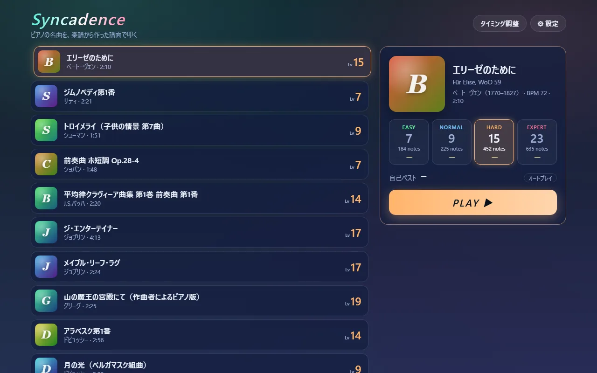
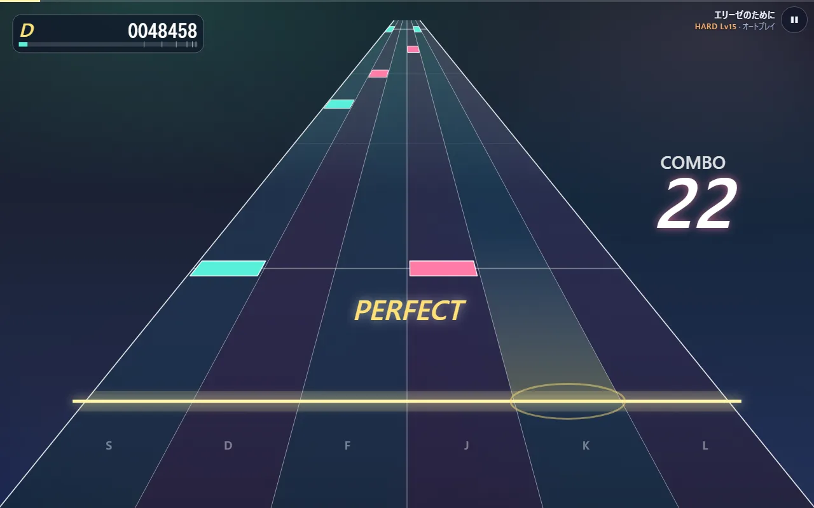

全体像 — 何をするプログラムで、どのファイルがどこを担うか
何をするプログラムか
ピアノの名曲を、楽譜から自動で作った譜面で叩くリズムゲームです。ブラウザで動き、パソコンではキーボード、スマホでは画面のタッチで遊べます。


作りは大きく 2 つに分かれます。
- 譜面を作る（Python・事前に 1 回） — Mutopia Project で公開されているパブリックドメインの楽譜（MIDI と LilyPond）を読み、難易度ごとの譜面と、鳴らす音の一覧を JSON に書き出します（
tools/）。 - 遊ぶ（TypeScript・ブラウザの中） — JSON を読み込み、ピアノの音を鳴らしながらノーツを流し、押した時刻を判定します（
src/）。
譜面と音は同じ楽譜から同じ時間軸で作られます。ノーツ 1 つ 1 つが「この音を鳴らす」という対応（links）を持っているので、叩いたノーツと鳴っている音が作りの上でずれません。
データの流れ
flowchart LR M["Mutopia Project<br/>MIDI + LilyPond"] -- "fetch_sources.py<br/>取得・PD の確認" --> S["sources/mutopia/<曲>/"] S -- "score.py<br/>テンポ・小節・強拍・右手左手" --> SC["Score"] SC -- "chart.py<br/>旋律を選ぶ・レーンを決める" --> C["難易度別の譜面"] SC -- "build_songs.py" --> J["public/songs/<曲>.json<br/>events（音）+ charts（譜面）"] C --> J P["FreePats のピアノ音源"] -- "build_samples.py" --> SM["public/samples/kw/*.mp3"] J -- "load.ts / validate.ts" --> E["PlayEngine（engine.ts）"] SM -- "sampler.ts" --> E E -- "highway.ts" --> CV["Canvas の画面"] E -- "Web Audio" --> SP["スピーカー"] K["キー・タッチ"] -- "Play.tsx" --> E
どのファイルが何を担うか
画面（src/ui）
| ファイル | 役目 |
|---|---|
| main.tsx | 入口。React に App と RotateHint を描かせる |
| App.tsx | いまどの画面か（選曲・プレイ・結果・タイミング調整）を持ち、切り替える |
| landscape.ts / RotateHint.tsx | スマホでは、タップで全画面に入って横向きに固定し、縦に持っている間は「横向きにしてください」を重ねる |
| SongSelect.tsx / select.ts | 選曲画面。矢印キーで曲と難易度を動かす |
| Play.tsx | プレイ画面。曲を読み込み、毎フレームの進行と描画を回し、キーとタッチを PlayEngine に渡す |
| Result.tsx | 結果画面。スコア・ランク・判定の内訳・押した時刻のずれ |
| Calibrate.tsx | タイミング調整。クリック音に合わせて叩いてもらい、端末の遅れを測る |
| SettingsPanel.tsx | 設定の項目（流れる速さ・補正・音量・再生速度など） |
進行と判定（src/game）
| ファイル | 役目 |
|---|---|
| engine.ts | 1 回のプレイの司令塔 PlayEngine。開始・一時停止・押下・毎フレームの進行をまとめる |
| session.ts | どのノーツが判定済みか、コンボ、スコアを持つ GameSession |
| judge.ts | 判定の幅（PERFECT ±42 ms など）とスコアの重み |
| keys.ts | キーとレーンの対応（4 レーンは D F J K） |
| rank.ts / stats.ts | ランクの境目、ずれの平均や中央値 |
音と時計（src/audio）
| ファイル | 役目 |
|---|---|
| context.ts | 音を鳴らす土台 AudioContext を 1 つだけ作る |
| clock.ts | 「いまスピーカーから聞こえている曲の位置」を出す SongClock |
| scheduler.ts | 曲の音を 0.4 秒先まで少しずつ予約していく |
| sampler.ts / regions.ts | ピアノの録音を読み込み、音の高さと強さに合わせて鳴らす |
描画（src/render）と曲データ（src/song）
| ファイル | 役目 |
|---|---|
| perspective.ts | 奥へ細くなるレーンの座標。時刻を「奥行き」に写す |
| highway.ts | 1 フレーム分の絵（レーン・ノーツ・判定の文字・スコア）を Canvas に描く |
| types.ts / load.ts / validate.ts | 曲データの形、読み込み、壊れていないかの確認 |
| storage.ts | 設定と自己ベストをブラウザに保存する |
譜面を作る（tools・Python）
| ファイル | 役目 |
|---|---|
| fetch_sources.py | 楽譜を取得し、ヘッダに「Public Domain」と書かれていない曲は止める |
| score.py | MIDI を読み、テンポ・小節線・拍の強さ・右手左手を出す |
| chart.py | 楽譜から難易度別の譜面を作る。このゲームのいちばんの工夫 |
| build_songs.py | 曲ごとの JSON と一覧 index.json を書き出す |
| build_samples.py | ピアノ音源をブラウザ向けの mp3 に変換する |
読む順序
- まず
notes/02-from-scoreとnotes/03-one-noteで、譜面ができるまでと、ノーツ 1 つが判定されるまでの筋をつかみます。 - 次にコードを、プレイの流れに沿って読みます。
- 画面の入口:
main.tsx→App.tsx→landscape.ts→RotateHint.tsx→storage.ts- 曲を読む:song/types.ts→song/load.ts→song/validate.ts→SongSelect.tsx→select.ts- プレイ:Play.tsx→engine.ts→keys.ts→session.ts→judge.ts- 音と時計:context.ts→clock.ts→scheduler.ts→sampler.ts→regions.ts- 描画:perspective.ts→highway.ts- 終わったあと:Result.tsx→rank.ts→stats.ts→Calibrate.tsx→SettingsPanel.tsx- 譜面作り:fetch_sources.py→score.py→chart.py→build_songs.py→build_samples.py - 知らない書き方が出てきたら
notes/05-syntaxで引きます。最初に説明したファイルへ飛べます。 - 「この数字を変えるとどうなるか」は
notes/06-knobsにまとめてあります。
写したファイルと、写していないもの
このキットはコミット 404da56 の 32 ファイルを丸ごと写しています。プレイの筋に関わらないものは外しました。
src/ui/format.ts（秒を「2:10」の形にするなどの小さな整形）とsrc/ui/SettingsDrawer.tsx（選曲画面の右から出す枠。中にSettingsPanel.tsxと遊び方の説明を入れる）。tools/inspect_chart.py（作った譜面を確かめるための道具）。- テスト（
src/**/*.test.ts、tools/tests/）、見た目の CSS（src/styles/）、曲データの JSON そのもの。